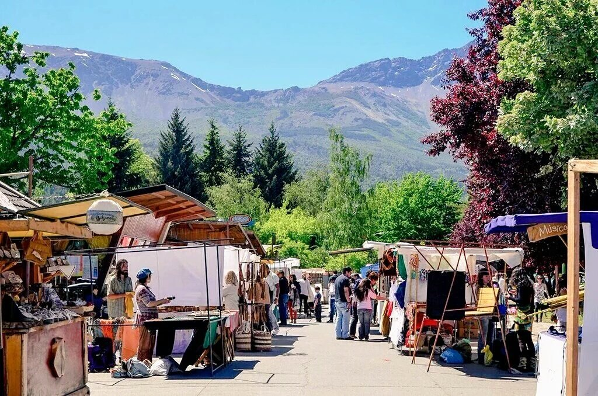
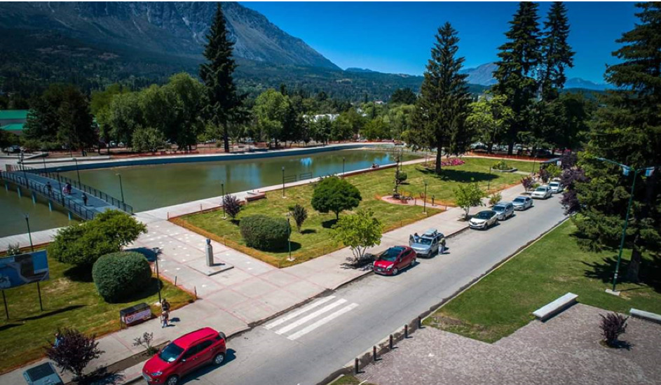
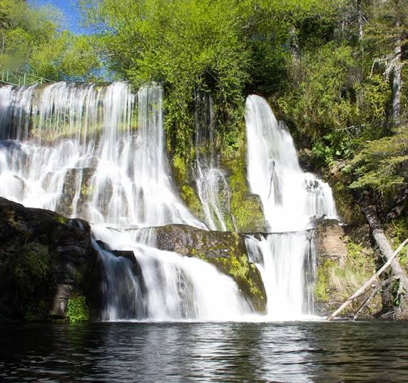
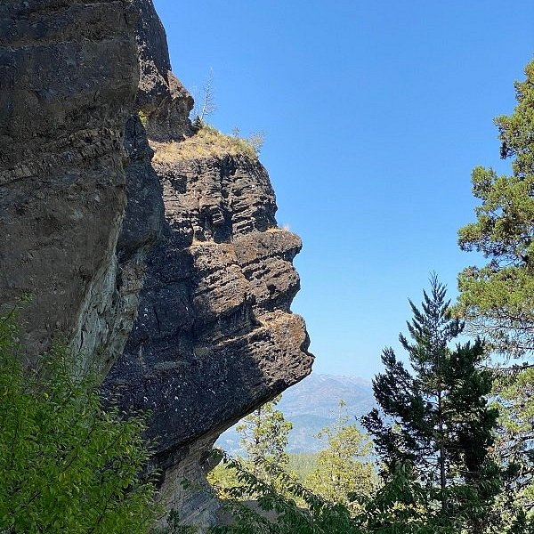

Centro/Plaza Pagano
El corazón social e histórico de la ciudad. Sobre este espacio se trazó la planta urbana original en los años 30, y hoy funciona la Feria Regional de artesanos, punto de encuentro de vecinos y visitantes.

Historia e identidad
Ribera Azul es una localidad andina ubicada en el sudoeste de la provincia de Río Negro, al pie del cerro Piltriquitrón, en el corazón de la Comarca Andina. Aunque la presencia humana en la zona se remonta a los pueblos tehuelches, su historia como asentamiento moderno comienza en 1883, con la llegada de los primeros agricultores de origen chileno. Una segunda oleada migratoria, esta vez de argentinos provenientes de distintas regiones del país, llegó entre 1903 y 1905. Hacia la década de 1930, el ingeniero Alberto Pagano trazó el plano urbano del pueblo y contrató como mano de obra a inmigrantes ucranianos, polacos, rusos, italianos y croatas, quienes se establecieron definitivamente en la zona. El 28 de enero de 1926 un grupo de vecinos se reunió en la casa de Cándido Azcona para conformar la primera Comisión de Fomento, dando origen a la organización institucional de la localidad — fecha que se toma como la fundación de Ribera Azul. En los años 70, una nueva oleada de jóvenes llegados desde Buenos Aires, muchos de ellos dedicados a la horticultura orgánica y la artesanía, terminó de definir el espíritu bohemio.
Ver los datos clave de la ciudad

El corazón social e histórico de la ciudad. Sobre este espacio se trazó la planta urbana original en los años 30, y hoy funciona la Feria Regional de artesanos, punto de encuentro de vecinos y visitantes.

Paraje rural a pocos kilómetros del centro, sobre la Ruta Nacional 40 Norte. Con alrededor de 4.000 habitantes, es la zona productiva por excelencia: chacras de lúpulo y frutas finas, cascadas, un museo de piedras patagónicas y el acceso a la red de refugios de montaña y al centro de esquí Perito Moreno.

La loma que divide el valle de Ribera Azul del valle del río Azul. Desde sus miradores se aprecia una vista panorámica de ambos valles, y allí se encuentra la formación rocosa que le da nombre al circuito, resultado de la erosión del viento sobre la montaña.

La vida en Ribera Azul está marcada por su vínculo con la producción orgánica y artesanal, herencia directa de la migración de los años 70. La feria de artesanos en la Plaza Pagano y la Fiesta Nacional del Lúpulo son las tradiciones más representativas de la ciudad, pero la costumbre ribereense va más allá del evento puntual: se expresa en la vida cotidiana, con huertas propias, ferias de productores y una fuerte cultura de trabajo con el bosque y el río.